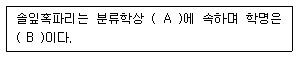

식물보호산업기사 (2018-03-04 기출문제)
1과목: 식물병리학
1. 흰가루병 병원체에 해당하는 것은?
- 임의부생체
- 조건기생체
- 임의기생체
- 순환물기생체
(정답률: 81%)

2. 식물병원균의 레이스를 판단하기 위해서 사용되는 특정한 품종을 무엇이라 하는가?
- 선택 품종
- 판별 품종
- 지표 품종
- 깃발 품종
(정답률: 87%)
3. 세균에 의한 식물병은?
- 벼 도열병
- 벼 흰잎마름병
- 벼 깨씨무늬병
- 배나무 검은무늬병
(정답률: 82%)
4. 벼 줄무늬잎마름병을 매개하는 곤충은?
- 애멸구
- 진딧물
- 벼멸구
- 끝동매미충
(정답률: 79%)
5. 식물 바이러스 전반에 대한 설명으로 옳은 것은?
- 응애는 바이러스를 매개하지 않는다.
- 곰팡이와 세균은 바이러스를 매개하지 않는다.
- 흡즙구보다는 저작구를 가진 곤충이 바이러스 매개율이 높다.
- 바이러스에 감염된 선충의 유충은 탈피하면 바이러스를 잃는다.
(정답률: 59%)
6. 대추나무 빗자루병의 치료제로 주로 쓰이는 항생제는?
- 페나리몰
- 테부코나졸
- 스트렙토마이신
- 옥시테르라사이클린
(정답률: 84%)
7. 밤나무 줄기마름병의 전형적인 병징은?
- 궤양
- 위조
- 위축
- 도장
(정답률: 65%)
8. 식물이 병에 견디는 힘이 약한 성질은?
- 이병성
- 내병성
- 면역성
- 비기주 저항성
(정답률: 71%)
9. 벼 도열병균의 월동 형태로 옳은 것은?
- 땅 속에서 균사나 분생포자로 월동
- 땅 속에서 균사나 담자포자로 월동
- 볏집 또는 볍씨의 병든 부분에서 균사나 분생포자로 월동
- 볏집 또는 볍씨의 병든 부분에서 균사나 담자포자로 월동
(정답률: 74%)
10. 건전한 씨감자를 고랭지에서 생산하는 주요 원인은?
- 감자 역병의 전염 회피
- 화산재 토양의 비옥성 때문
- 진딧물에 의한 바이러스병의 전염 회피
- 고랭지의 온도조건이 씨감자 생산에 좋기 때문
(정답률: 66%)
11. 식물병 성립에 필요한 3가지 요인은?
- 환경, 온도, 기주
- 병원, 기주, 품종
- 병원, 기주, 환경
- 병원, 병원성, 소인
(정답률: 83%)
12. 유성번식을 하지 않거나 또느 매우 드물게 하는 병원균은?
- 난균류
- 자낭균류
- 담자균류
- 불완전균류
(정답률: 77%)
13. 고구마에 발생하는 병으로 접합균류에 속하는 것은?
- 무름병
- 더뎅이병
- 덩굴쪼김병
- 자주날개무늬병
(정답률: 64%)
14. 잣나무에 발생하는 병으로 주로 줄기의 수피가 노란색 내지 갈색으로 변하며, 까치 밥나무 및 송이풀을 중간기주로 발병하는 것은?
- 혹병
- 털녹병
- 탄저병
- 잎떨림병
(정답률: 88%)
15. 수박의 덩굴쪼김병을 방제하기 위하여 주로 사용하는 대목은?
- 오이
- 호박
- 참외
- 메론
(정답률: 80%)
16. 병에 걸린 곡물을 사료로 사용하면 가축에 중독중상을 일으키는 맥류의 병은?
- 녹병
- 마름병
- 깜부기병
- 붉은곰팡이병
(정답률: 85%)
17. 무사마귀병에 대한 설명으로 옳은 것은?
- 벼에도 잘 발생한다.
- 세균에 의해 발생한다.
- 산성토양에서 잘 발생한다.
- 온도가 20℃ 이하일 때 잘 발생한다.
(정답률: 84%)
18. 주로 종자로 전염되는 벼의 병이 아닌 것은?
- 도열병
- 키다리병
- 잎집무늬마름병
- 세균성벼알마름병
(정답률: 56%)
19. 잎의 앞면에는 각이 지는 황색 병반이 생기고 뒷면에는 곰팡이가 자란 것이 보이는 병은?
- 오이 노균병
- 고추 탄저병
- 배추 모자이크병
- 수박 덩굴쪼김병
(정답률: 74%)
20. 고추 탄저병의 방제방법으로 가장 효과가 미비한 것은?
- 종자소독
- 토양소독
- 저항성 품종 재배
- 주기적 약제 살포
(정답률: 60%)
2과목: 농림해충학
21. 곤충이 번성하게 된 요인으로 거리가 가장 먼 것은?
- 몸의 크기가 작다.
- 온혈을 가지고 있다.
- 외골격이 발달하였다.
- 연중 세대수가 많고 산란수가 많다.
(정답률: 79%)
22. 주요 가해 부위가 나머지 셋과 다른 해충은?
- 박쥐나방
- 측백하늘소
- 포도유리나방
- 복숭아명나방
(정답률: 54%)
23. 혹명나방에 대한 설명으로 옳지 않은 것은?
- 해외에서 비래한다.
- 잎을 말고 가해한다.
- 십자화과 작물을 가해한다.
- 알에서 성충에서 한달 정도 소요된다.
(정답률: 56%)
24. 솔잎혹파리는 어느 충태의 기간이 가장 짧은가?
- 알
- 성충
- 유충
- 번데기
(정답률: 66%)
25. 벼룩잎벌레에 대한 설명으로 옳지 않은 것은?
- 성충으로 월동한다.
- 유충이 잎을 가해한다.
- 1년에 4~5회 발생한다.
- 잡초나 얕은 땅속에서 월동한다.
(정답률: 47%)
26. 유충은 벼의 뿌리를 가해하며, 연 1회 발생하고 논 주위 땅속 또는 낙엽 속에서 월동하는 해충은?
- 벼잎벌레
- 벼물바구미
- 이화명나방
- 벼애잎굴파리
(정답률: 71%)
27. 완전변태를 하는 곤충은?
- 나방류
- 노린재류
- 메뚜기류
- 진딧물류
(정답률: 77%)
28. 양성 주광성이 가장 약한 곤충은?
- 솔나방
- 벼애나방
- 배추흰나비
- 이화명나방
(정답률: 67%)
29. 수확기가 된 콩 꼬투리의 봉합선 가까이에 작은 구멍이 있고 꼬투리 안에 들어 있는 콩의 가장자리를 벌레가 갉아 먹은 자국이 있는 경우 어느 해충의 피해로 추정되는가?
- 콩나방
- 콩가루벌레
- 콩잎말이나방
- 콩줄기굴파리
(정답률: 65%)
30. 살충제를 이용한 해충 방제에 대한 설명으로 옳지 않은 것은?
- 천적류의 밀도를 감소시킨다.
- 저항성 해충이 나타날 가능성이 있다.
- 인축이나 야생동물에 미치는 영향이 비교적 작다.
- 효과가 빨라서 짧은 기간 내에 방제가 가능하다.
(정답률: 76%)
31. 곤충의 피부에 대한 설명으로 옳지 않은 것은?
- 외부 골격에 해당한다.
- 원표피는 외원표피와 내원표피로 나뉜다.
- 피부는 크게 표피층, 진피세포층, 기저막으로 나눌 수 있다.
- 곤충이 탈피할 때는 진피세포층과 기저막 외의 모든 표피층을 벗어던진다.
(정답률: 77%)
32. 곤충 다리의 기본적인 구조는 몇 마디로 이루어져 있는가?
- 1마디
- 3마디
- 5마디
- 7마디
(정답률: 77%)
33. 천적으로 이용하기 가장 어려운 생물은?
- 포식충
- 기생벌
- 병원균
- 불임충
(정답률: 63%)
34. 다음 ( )에 해당하는 용어로 옳은 것은?

- A : 벌목 혹파리과, B : Dendrolimus spectabilis
- A : 벌목 혹파리과, B : Thecodiplosis japonensis
- A : 파리목 혹파리과, B : Dendrolimus spectabilis
- A : 파리목 혹파리과, B : Thecodiplosis japonensis
(정답률: 70%)
35. 매미나방의 연 발생 횟수는?
- 1회
- 2회
- 3회
- 4회
(정답률: 66%)
36. 끝동매미충에 대한 설명으로 옳지 않은 것은?
- 연 1회 발생한다.
- 바이러스병을 매개한다.
- 약충은 몸 색깔의 변화가 심하다.
- 약충과 성충 모두 기주식물을 흡즙한다.
(정답률: 53%)
37. 내충성이 강한 품종을 선택하여 재배하는 방제법은?
- 물리적 방제법
- 화학적 방제법
- 생물적 방제법
- 생태적 방제법
(정답률: 63%)
38. 곤충의 더듬이 끝마디인 채찍마디의 주요 역할은?
- 냄새를 맡는 역할
- 소리를 듣는 역할
- 암컷의 날개소리 감지
- 비행 중 바람의 속도측정
(정답률: 62%)
39. 단위생식에 의해 증식하는 해충은?
- 솔나방
- 벼메뚜기
- 밤나무혹벌
- 배추흰나비
(정답률: 73%)
40. 청각 기능을 하는 존스턴 기관의 위치는?
- 밑마디
- 팔굽마디
- 자루마디
- 편절마디
(정답률: 74%)
3과목: 농약학
41. 농약의 유효성분이 잡초의 경엽으로부터 쉽게 뿌리부분으로 이행되어 살초작용을 나타내므로 약효가 서서히 나타나지만 뿌리까지 완전히 고사시킬 수 있는 일년생 및 다년생에 적용하는 비선택성 제초제는?
- 리뉴론
- 시마진
- 메트리뷰진
- 글리포세이트포타슘
(정답률: 68%)
42. 병균의 포자 발아를 억제시켜 감염을 예방하는 보호살균제(保護殺菌劑)는?
- 만코지
- 파라티온
- 스미치온
- 다이아톤
(정답률: 65%)
43. 50% DDVP 유제 100mL를 0.01%의 용액으로 하여 살포하려고 한다. 희석에 소요되는 물의 양은? (단, 50% DDVP의 비중은 2.0 이다.)
- 500L
- 1,000L
- 5,000L
- 10,000L
(정답률: 63%)
44. 물에 희석하지 않고 그대로 사용하는 제형은?
- 수화제
- 수용제
- 유제
- 분제
(정답률: 71%)
45. 압축가스로 충진한 스프레이 통에 넣어 분사하거나 포그 머신을 이용하여 고압이나 열을 가하여 분무하도록 제제되는 농약은?
- 훈증제
- 훈연제
- 연무제
- 정제
(정답률: 54%)
46. 유기인제 농약의 중량제로 가장 부적당한 것은?
- 활석
- 소석회
- 납석
- 규조토
(정답률: 63%)
47. 농약의 제제란 농약의 유효성분에 각종 용제, 중량제 등이 보조제를 조합시켜서 살포하기에 알맞게 조제된 것을 의미한다. 이것의 장점이 아닌 것은?
- 살포비산의 증진
- 식물체의 침투촉진
- 유효성분의 효력증강
- 주성분의 경시적 변화방지
(정답률: 51%)
48. 물에 녹지 않은 원제를 잘 녹이는 용매(Solvent)에 유화제를 가하여 만든 제제는?
- 용액
- 유제
- 액제
- 수화제
(정답률: 72%)
49. 농약을 음식물로 잘못 알고 마셨을 때 나타나는 중독은?
- 급성중독
- 긴급중독
- 만성중독
- 식중독
(정답률: 79%)
50. 농약독성에 따른 약해를 방지하기 위한 대책으로 가장 거리가 먼 것은?
- 제제의 개선
- 근접살포
- 해독제 이용
- 농약의 안전사용기준 준수
(정답률: 74%)
51. 65% 지오릭스(Endosulfan) 분말 1kg을 5% 분제로 만들려면 이때 증량제의 양은 몇 kg 인가?
- 10
- 11
- 12
- 13
(정답률: 59%)
52. 작용기작이 서로 다른 2종 이상의 약제에 대해 저항성을 나타내는 것으로 한 개체 안에 두 가지 이상의 저항성기작이 존재하기 때문에 발생하는 현상을 무엇이라 하는가?
- 교차저항성
- 복합저항성
- 저항성계통
- 감수성계통
(정답률: 68%)
53. 콩나물의 생장촉진제로 주로 사용되는 것은?
- 6-BA
- IBA
- I-naphthylacetamide
- 4-CPA
(정답률: 62%)
54. 농약의 작물잔류성에 대한 설명으로 옳지 않은 것은?
- 증기압이 높은 약제일수록 증발하기 쉬우므로 잔류기간이 짧다.
- DDVP 유제는 증기압이 약 1.2×10-2mmHg(20℃) 정도로 증기압이 낮아 잔류기간이 길다.
- 증기압은 살포된 농약이 식물제 표면에서 소실하는 데 가장 중요한 요인이다.
- 농약의 입자가 미세할수록 증발속도가 빠르다.
(정답률: 64%)
55. 과수용 농약으로 가장 부적당한 제형은?
- 수화제
- 수용제
- 분제
- 입제
(정답률: 49%)
56. 사용목적에 따른 농약의 분류가 아닌 것은?
- 살균제
- 살충제
- 비소제
- 제초제
(정답률: 79%)
57. 현재 우리나라에서 사용되는 농약 중 대부분을 차지하는 것은?
- 고독성농약
- 저독성농약
- 보통독성농약
- 무독성농약
(정답률: 76%)
58. 도열병 약제의 농약 명칭을 키타진으로 표기할 때 다음 중 어디에 해당하는가?
- 화학명
- 품목명
- 상표명
- 원소명
(정답률: 61%)
59. 농약의 독성을 표시하는 단위로서 반수치사량(중위수 치사량)을 나타내는 기호는?
- LT50
- LF50
- LM50
- LD50
(정답률: 84%)
60. 농약의 안전사용에 대한 설명으로 거리가 가장 먼 것은?
- 재배기간 중 사용가능 횟수 내에서 사용한다.
- 적용 대상 농작물에 병해충 발생 확인 시 어느 때나 사용한다.
- 사용 작물의 수확기 전후를 확인하여 사용시기를 준수한다.
- 농약 사용자는 안전 사용 기준에 맞게 적정하게 사용하여야 한다.
(정답률: 82%)
4과목: 잡초방제학
61. 제초제를 흡수한 잡초 체내에서 일어나는 대사 과정으로 옳지 않는 것은?
- 산화
- 환원
- 염소반응
- 가수분해
(정답률: 61%)
62. 경종적 방제법이 아닌 것은?
- 윤작 재배를 한다.
- 비옥도를 조정한다.
- 중경 제초기를 이용한다.
- 작물의 경합력을 증대시킨다.
(정답률: 64%)
63. 방동사니과 잡초가 아닌 것은?
- 매자기
- 바랭이
- 괭이사초
- 올챙이고랭이
(정답률: 53%)
64. 종합적 방제법에 대한 설명으로 옳은 것은?
- 여러 가지 제초제를 혼합하여 잡초를 방제하는 것이다.
- 여러 가지 방법을 시행해 보고 가장 효율적인 방제법만 적용하는 것이다.
- 화학 약품의 제초제를 사용하지 않고 환경친화적인 제초를 하는 것이다.
- 생물적, 물리적, 화학적 방제법 등 여러 방제법을 다양하게 적용하는 것이다.
(정답률: 79%)
65. 생물적 방제법에 적용하는 것으로 거리가 가장 먼 것은?
- 토양
- 곤충
- 어류
- 병원균
(정답률: 72%)
66. 잡초 종자가 휴면하는 원인으로 거리가 가장 먼 것은?
- 탄산가스의 결핍
- 물의 투수성 방해
- 생장조절물질의 불균형
- 배의 불완전 또는 미숙
(정답률: 71%)
67. 계면활성제의 유화성과 가장 깊은 관계가 있는 제형은?
- 입제
- 유제
- 분제
- 수용제
(정답률: 71%)
68. 주로 종자로 번식하는 잡초가 아닌 것은?
- 피
- 바랭이
- 올방개
- 가을강아지풀
(정답률: 56%)
69. 잡초의 분류방법으로 식물학적 순서로 옳은 것은?
- 과 - 속 - 아종 - 변종 - 종
- 속 - 종 - 과 - 아종 - 변종
- 과 - 종 - 속 - 변종 - 아종
- 과 - 속 - 종 - 아종 - 변종
(정답률: 72%)
70. 잡초의 상호대립억제작용(Allelopathy)을 이용한 잡초 방제법은?
- 생물적 방제법
- 생태적 방제법
- 물리적 방제법
- 종합적 방제법
(정답률: 56%)
71. 잡초의 생장형에 따른 분류로 옳지 않은 것은?
- 직립형 : 명아주
- 총생형 : 뚝새풀
- 분지형 : 광대나물
- 포복형 : 가막사리
(정답률: 55%)
72. 작물과 잡초의 경합에 있어서 잡초 허용한계밀도의 의미로 옳은 것은?
- 작물의 밀도가 잡초보다 높은 수준
- 잡초의 밀도가 작물보다 높은 수준
- 최저 작물 수량을 가져오는 잡초의 밀도
- 작물 수량 및 품질에 큰 영향을 미치지 않는 잡초의 밀도
(정답률: 67%)
73. 잡초 발생이 물 관리에 미치는 영향이 아닌 것은?
- 물의 흐름을 방해한다.
- 용존 산소의 농도를 저하시킨다.
- 잡초 고사체에 의한 수질 오염이 문제가 된다.
- 관배수에서 증발량과 지하침투량이 저하된다.
(정답률: 60%)
74. 잡초 종자의 발아 습성으로 발아의 계절성에 대한 설명으로 옳은 것은?
- 일장에 반응하여 발아하는 특성이다.
- 온도에 반응하여 발아하는 특성이다.
- 광도에 반응하여 발아하는 특성이다.
- 습도에 반응하여 발아하는 특성이다.
(정답률: 72%)
75. 페녹시계 제초제로 이행성이 있는 것은?
- 벤타존 액제
- 이사-디 액제
- 메톨라클로르 유제
- 프레틸라클로르 유제
(정답률: 72%)
76. 지하경을 형성하는데 일장의 영향을 거의 받지 않는 잡초는?
- 벗풀
- 올미
- 가래
- 너도방동사니
(정답률: 40%)
77. 논에 발생하는 잡초를 방제할 목적으로 사용되는 제초제가 아닌 것은?
- 티오벤카브 입제
- 뷰타클로르 입제
- 알라클로르 유제
- 벤타존·엠시피에이 입제
(정답률: 47%)
78. 벼 재배 시 벼와 경합이 가장 큰 잡초는?
- 피
- 벗풀
- 올방개
- 물달개비
(정답률: 78%)
79. 작물의 수량에 피해가 가장 큰 경우는?
- C3 잡초와 C3 작물
- C3 잡초와 C4 작물
- C4 잡초와 C3 작물
- C4 잡초와 C4 작물
(정답률: 70%)
80. 주로 밭에서 생육하는 다년생 잡초가 아닌 것은?
- 쑥
- 여뀌
- 씀바귀
- 참소리쟁이
(정답률: 57%)